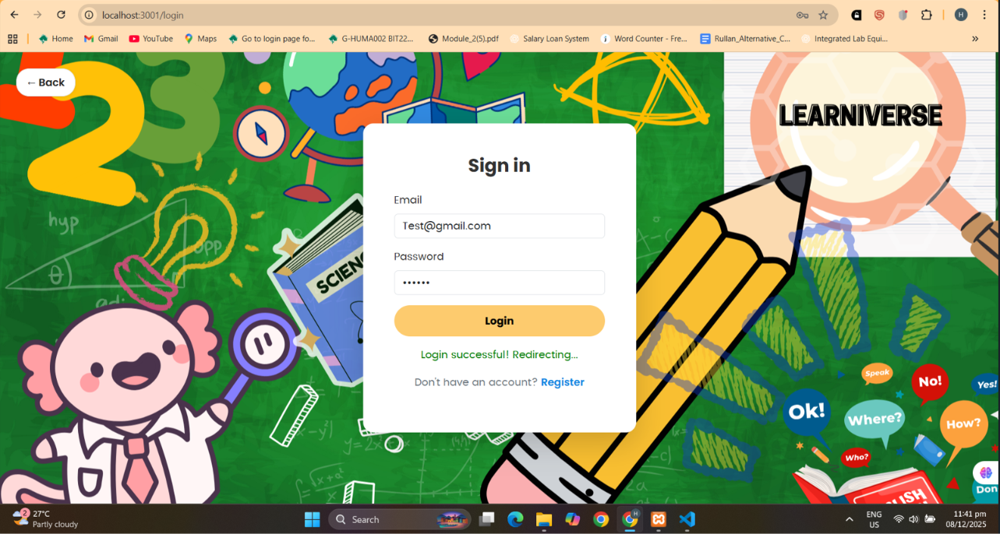
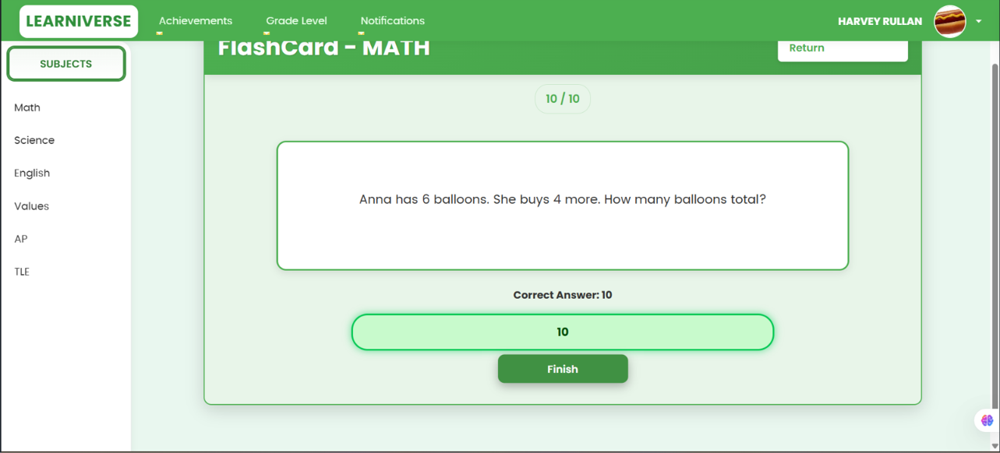
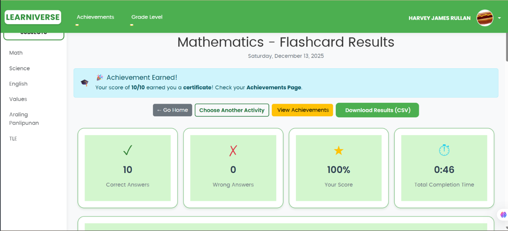
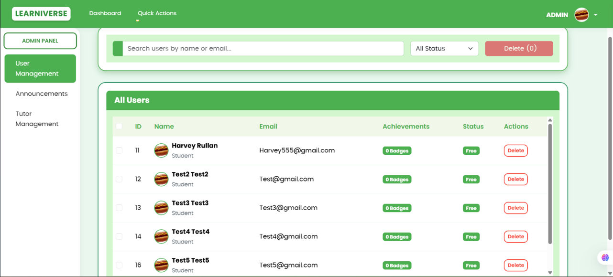
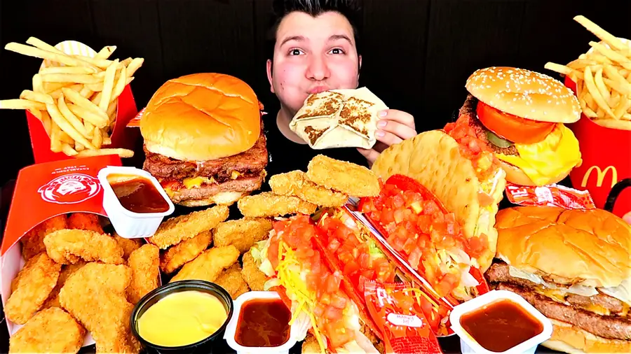

Hi, I'm Harvey Laurence P. Rullan
Crafting clean, modern digital experiences
I'm a passionate web developer with a love for building intuitive, responsive, and visually engaging websites. With a background in design and a focus on user experience, I bring ideas to life through code.
About Me
Web Craftsmanship
I build responsive, accessible websites using modern HTML, CSS, and JavaScript. Clean code and thoughtful design are at the heart of everything I create.
Design Mindset
With a keen eye for typography, color, and layout, I bridge the gap between design and development to deliver polished, user-friendly interfaces.
Continuous Growth
I'm constantly learning new tools and techniques, from frameworks like React to animation libraries, to stay at the forefront of web innovation.
Passion Projects
Beyond client work, I love tinkering with side projects, contributing to open-source, and sharing knowledge with the developer community.
Projects
A selection of work that shows how I turn requirements into finished, working software.
Learniverse
An online learning portal where students work through lesson modules, complete activities, and reach out to tutors for extra help.




Testimonials
Kind words from people I've worked with.
My Interests
A glimpse into what fuels my creativity and curiosity.

💻 Coding
Building web apps, experimenting with new libraries, and solving puzzles through code.

📷 Photography
Capturing urban landscapes, nature, and candid moments — finding beauty in the everyday.

🏸 Badminton
Swinging rackets like there is no tomorrow, and a constant exchange of blows for an endless challenge.

🎵 Music
Playing guitar, producing electronic beats, and curating playlists that set the mood.

🎮 Gaming
Playing different genres of games like turn-based, RPGs, and strategy.

😋 Foodie
I like eating different types of cuisines that excite my taste buds.